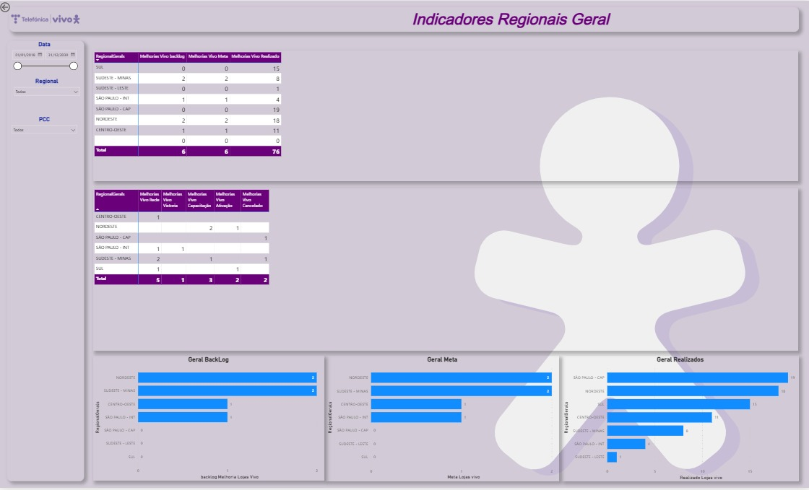

Projetos

Indicadores Regionais – Telecom
Dashboard para acompanhamento de metas, backlog e eficiência operacional.
Power BI • DAX • Dados

Controle de Migrações
Monitoramento de status, pendências e indicadores críticos.
Power BI • Telecom
Atividades por Regional
Análise de produtividade, eficiência e status técnico por região.
Power BI • Gestão Tell Telecomunicações
Tell Telecomunicações
 TIS – Telefônica Segurança e Infraestrutura
TIS – Telefônica Segurança e Infraestrutura
 Análise e Desenvolvimento de Sistemas – UNISA (Formado)
Análise e Desenvolvimento de Sistemas – UNISA (Formado)
 Power BI – do Básico ao PRO
Power BI – do Básico ao PRO Python e SQL – Cursando
Python e SQL – Cursando Bootcamp CISCO
Bootcamp CISCO Yellow Belt – Lean Six Sigma
Yellow Belt – Lean Six Sigma ASAM – Centro de Apoio ao Jovem Aprendiz
ASAM – Centro de Apoio ao Jovem Aprendiz